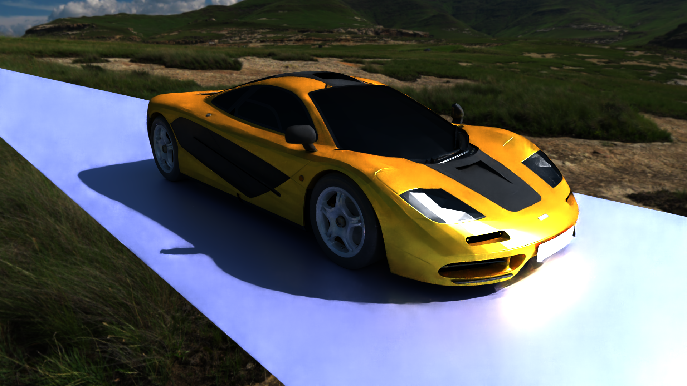
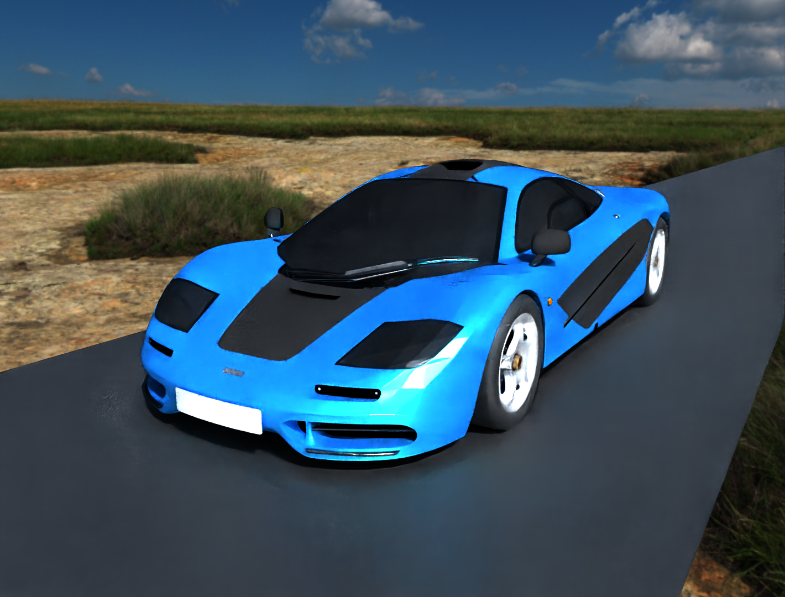

Assignment 4: Multiple Importance Sampling (MIS)
Final Project (WIP)

Mclaren F1 - with Environment Map and Deep Learning Denoising

Mclaren F1 - with Environment Map and Deep Learning Denoising
Path Tracer Improvements
- HDR Environment Maps
- OBJ Support
- Resampled Importance Sampling